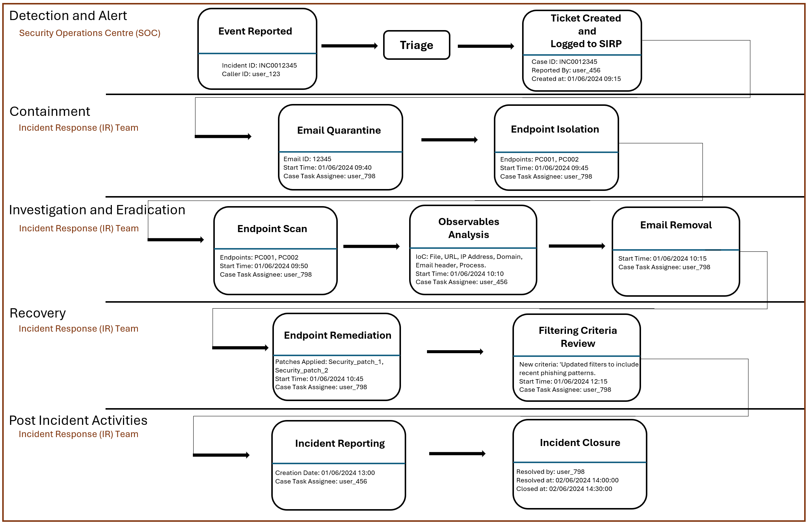

Incident Response Process Log Dataset
synthetic Incident Response Process Activities and Communication data Log dataset generated using an LLM. An exisiting anonymised publicly available Incident managament Process Log dataset was augmented to include additional fields and textual data.
p
The dataset includes detailed records of various Incident Response cases, corresponding actions, processes, and communication. Each record represents an individual incident and contains information relevant to the response actions and resolution of security incidents.
Purpose
This dataset is designed to advance the field of Incident Response (IR) by providing a comprehensive and realistic set of records related to various IR activities. It serves multiple purposes:
- Training Purposes: By offering a diverse range of incident scenarios and corresponding data, this dataset is invaluable for training IR professionals. It helps in understanding and practicing response strategies in simulated, but realistic environments.
- Analysis of Past Incidents: The dataset includes historical incident data that can be analyzed to identify trends, common attack vectors, and response efficacy. This analysis aids in refining existing strategies and preparing for future incidents.
- Improving Response Strategies: By integrating various types of incident data, communication logs, and response actions, this dataset allows organizations to test and enhance their incident response plans and strategies.
Structure
The dataset is meticulously organized to provide a detailed view of IR processes. It includes:
- Types of Incidents: Various categories of incidents, such as phishing attacks, malware infections, and insider threats.
- Data Fields: Key fields include the time of the incident, type of attack, response actions, communication logs, and resolution details.
- Number of Cases: The dataset comprises numerous cases, each representing a unique incident scenario with detailed records of actions taken and communications exchanged.
Sample Incident Instance Breakdown
Each Incident Response (IR) case instance in the dataset is structured to represent a complete IR process. The following breakdown illustrates how an IR case from one of the dataset instances was detected, handled, and resolved, with detailed information about every step in the response.
Incident Details
IR Process Diagram for a Phishing Incident

Dataset
To further review the IT dataset, kindly visit the following link:
View Dataset
Survey
Your feedback is important to us. Please take a moment to fill out our survey based on your observations of the dataset and process diagram.
Take the Survey